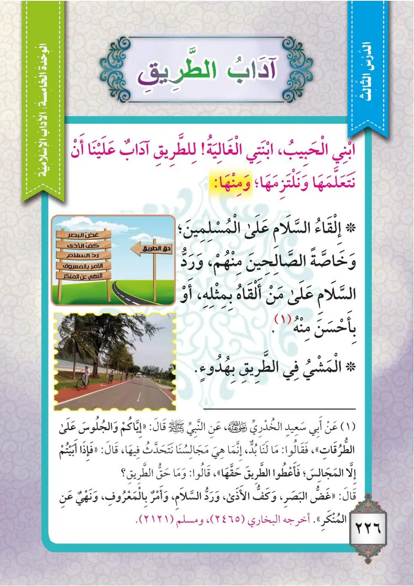
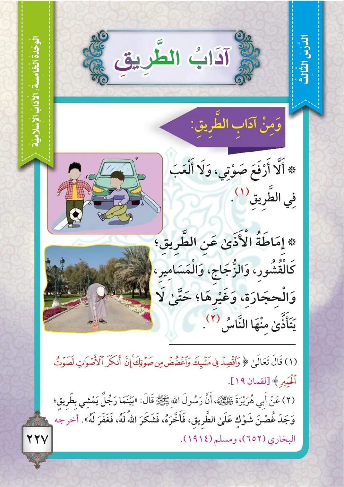
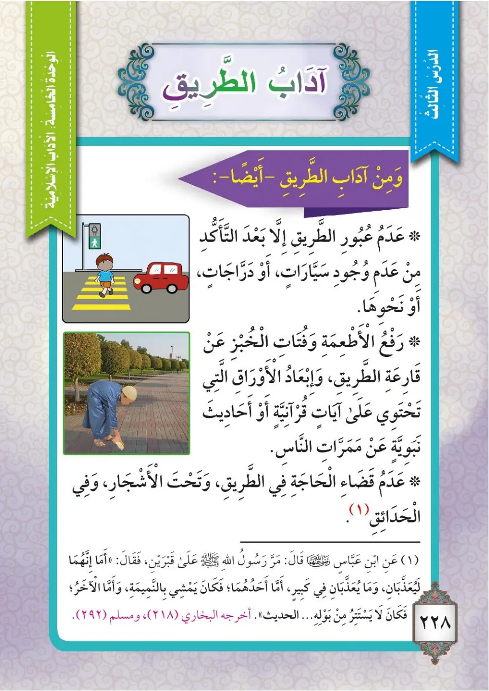

Stage 3·المرحلة الثالثة⭐ Unit 1
آدَابُ الطَّرِيقِ Manners of the Road
From the Textbookpp. 227–229



ينبغي لنا أنْ نتعلمَ آدابَ الطريقِ ونلتزمَها، ومنها: ١- إلقاءُ السلامِ على المسلمينَ، وخاصةً الصالحينَ منهم. ٢- كفُّ الأذى، ورَدُّ السلامِ على من ألقاهُ بمثلِهِ أو بأحسنَ منهُ. ٣- المشيُ في الطريقِ بهدوءٍ.
Yanbaghi lana an nata'allama adaba at-tariqi wa nalTazimaha, wa minHa: 1- ilqa'u as-salami 'ala al-muslimina, wa khasSatan as-saalihina minhUM. 2- kaffu al-adha, wa raddu as-salami 'ala man alqaHu bi-mithliHi aw bi-ahsana minHu. 3- al-mashyu fi at-tariqi bi-hudu'in.
We must learn and observe the manners of the road. Some of them are:
1. Giving the greeting of peace (salam) to Muslims, especially the righteous among them.
2. Refraining from harm, and returning the greeting with its like or with something better.
3. Walking on the road calmly.
சாலையின் நடத்தைகளை நாம் கற்று கடைப்பிடிக்க வேண்டும்:
1. முஸ்லிம்களுக்கு ஸலாம் கூறுவது; குறிப்பாக அவர்களில் நல்லவர்களுக்கு.
2. துன்பம் தருவதைத் தவிர்ப்பது; வாழ்த்தியவருக்கு அதே போல் அல்லது அதைவிடச் சிறப்பாக வாழ்த்துத் திருப்பி அனுப்புவது.
3. சாலையில் அமைதியாக நடப்பது.
عن أبي سعيدٍ الخدريّ رضي الله عنه قال: قال رسولُ اللهِ ﷺ: «إِيَّاكُمْ وَالجُلُوسَ عَلَى الطُّرُقَاتِ»، فقالوا: ما لنا بُدٌّ؛ إنَّما هي مجالسُنا نتحدَّثُ فيها. قال: «فَإِذَا أَبَيْتُمْ إِلَّا المَجَالِسَ فَأَعْطُوا الطَّرِيقَ حَقَّهَا». قالوا: وما حقُّ الطريقِ؟ قال: «غَضُّ البَصَرِ، وَكَفُّ الأَذَى، وَرَدُّ السَّلَامِ، وَالأَمْرُ بِالمَعْرُوفِ، وَالنَّهْيُ عَنِ المُنكَرِ». أخرجه البخاريُّ ومسلمٌ.
'An Abi Sa'idin al-Khudriyyi radiyallahu 'anHu qala: qala rasulullahi ﷺ: «Iyyakum wal-julusa 'ala at-turuqat», faqalu: ma lana buddun; innama hiya majalisuna natahaddathu fiha. Qala: «Fa-idha abaytum illa al-majalisa fa-a'tu at-tariqa haqqaHa». Qalu: wa ma haqqu at-tariqi? Qala: «Ghaddu al-basari, wa kaffu al-adha, wa raddu as-salami, wal-amru bil-ma'rufi, wan-nahyu 'ani al-munkari». Akhrajahu al-Bukhariyyu wa Muslimun.
Abu Said al-Khudri, may Allah be pleased with him, said: The Messenger of Allah ﷺ said: "Beware of sitting on the roadsides." They said: We have no alternative; they are our gatherings in which we talk. He said: "If you insist on sitting, then give the road its right." They asked: What is the right of the road? He said: "Lowering the gaze, refraining from harm, returning the greeting, enjoining good, and forbidding evil." Narrated by Al-Bukhari and Muslim.
அபூ ஸயீத் அல்-குத்ரீ (ரலி) கூறினார்கள்: "சாலைகளில் அமர்வதைத் தவிருங்கள்" என்று நபி ﷺ கூறினார்கள். "இருக்கவே வேண்டும்; அவை எங்கள் பேச்சுக் கூடங்கள்" என மக்கள் கூறினர். "அப்படியானால் சாலையின் உரிமைகளை நிறைவேற்றுங்கள்" என்று கூறினார்கள். "அவை என்ன?" என்று கேட்டனர். "பார்வையைத் தாழ்த்துவது, துன்பம் தராமல் இருப்பது, ஸலாமுக்குப் பதில் கூறுவது, நன்மையை ஏவுவது, தீமையைத் தடுப்பது" என்று கூறினார்கள். (புகாரி, முஸ்லிம்)
٤- ألَّا أرفعَ صوتي ولا ألعبَ في الطريقِ. قال تعالى:
4- alla arfa'a sawti wa la al'aba fi at-tariqi. Qala ta'ala:
4. I do not raise my voice or play on the road. Allah the Exalted said:
4. சாலையில் சத்தமிடாமலும் விளையாடாமலும் இருப்பது. அல்லாஹ் கூறினான்:
﴿وَاقْصِدْ فِي مَشْيِكَ وَاغْضُضْ مِن صَوْتِكَ ۚ إِنَّ أَنكَرَ الْأَصْوَاتِ لَصَوْتُ الْحَمِيرِ﴾
Waqsid fi mashyika waghdud min sawtika; inna ankara al-aswati lasawtu al-hamir.
And be moderate in your walking and lower your voice; indeed, the most disagreeable of sounds is the voice of donkeys.
உங்கள் நடையில் நடுத்தரமாக நடங்கள்; உங்கள் குரலைத் தாழ்த்துங்கள்; நிச்சயமாக கழுதைகளின் சத்தம்தான் மிகவும் வெறுக்கத்தக்க சத்தம்.
٥- إماطَةُ الأذى عن الطريقِ، كالقشورِ والزجاجِ والحجارةِ والمساميرِ وغيرِها، حتى لا يتأذى الناسُ منها.
5- I'matatu al-adha 'ani at-tariqi, kak-qushuri waz-zujaji wal-hijarati wal-masamiri wa ghayriHa, hatta la yata'adhdha an-nasu minHa.
5. Removing harmful things from the road, such as peels, glass, stones, nails, and others, so that people are not harmed by them.
5. சாலையிலிருந்து தீங்கானவற்றை அகற்றுவது - தோல், கண்ணாடி, கல், ஆணி போன்றவை - மக்கள் அவற்றால் துன்பப்படாமல் இருப்பதற்காக.
عن أبي هريرةَ رضي الله عنه قال: قال رسولُ اللهِ ﷺ: «بَيْنَمَا رَجُلٌ يَمْشِي بِطَرِيقٍ وَجَدَ غُصْنَ شَوْكٍ عَلَى الطَّرِيقِ فَأَخَّرَهُ، فَشَكَرَ اللهُ لَهُ فَغَفَرَ لَهُ». أخرجه البخاريُّ ومسلمٌ.
'An Abi Hurairata radiyallahu 'anHu qala: qala rasulullahi ﷺ: «Baynama rajulun yamshi bitariqin wajada ghusna shawkin 'ala at-tariqi fa-akhkharaHu, fashakara Allahu laHu faghafara laHu». Akhrajahu al-Bukhariyyu wa Muslimun.
Abu Hurairah, may Allah be pleased with him, said: The Messenger of Allah ﷺ said: "While a man was walking on a road, he found a thorny branch on the road and removed it, so Allah thanked him and forgave him." Narrated by Al-Bukhari and Muslim.
அபூ ஹுரைரா (ரலி) கூறினார்கள்: "ஒருவர் சாலையில் நடந்து சென்றபோது, சாலையில் முள்ளிருந்த கிளையைக் கண்டு அதை அகற்றினார். அல்லாஹ் அவருக்கு நன்றி செலுத்தி அவரை மன்னித்தான்" என்று நபி ﷺ கூறினார்கள். (புகாரி, முஸ்லிம்)
٦- عدمُ عبورِ الطريقِ إلا بعدَ التأكُّدِ من عدمِ وجودِ سياراتٍ، أو دراجاتٍ، أو نحوِها. ٧- رفعُ فتاتِ الأطعمةِ والخبزِ عن قارعةِ الطريقِ، وإبعادُ الأوراقِ التي تحتوي على آياتٍ قرآنيةٍ أو أحاديثَ نبويَّةٍ عن ممرَّاتِ الناسِ. ٨- عدمُ قضاءِ الحاجةِ في الطريقِ، وتحت الأشجارِ، وفي الحدائقِ.
6- 'adamu 'uburi at-tariqi illa ba'da at-ta'akkudi min 'adami wujudi sayyaratin, aw darrajatin, aw naHwiHa. 7- raf'u futati al-at'imati wal-khubzi 'an qari'ati at-tariqi, wa ib'adu al-awraqi allati tahtawi 'ala ayat Qur'aniyyah aw ahadith Nabawiyyah 'an marrat an-nasi. 8- 'adamu qada'i al-hajati fi at-tariqi, wa tahta al-ashjari, wa fi al-hada'iqi.
6. Not crossing the road except after making sure that there are no cars, bicycles, or similar things.
7. Lifting bits of food and bread off the roadside, and keeping papers that contain Quranic verses or Prophetic hadiths away from people's pathways.
8. Not relieving oneself on the road, under trees, or in gardens.
6. கார்கள், மிதிவண்டிகள் அல்லது அவை போன்றவை இல்லை என்பதை உறுதிசெய்த பிறகே சாலையைக் கடப்பது.
7. சாலையோரத்தில் உள்ள உணவுத் துண்டுகளையும் ரொட்டித் துண்டுகளையும் அகற்றுவது; குர்ஆன் வசனங்கள் அல்லது நபிவாக்கியங்கள் உள்ள தாள்களை மக்கள் நடமாடும் இடங்களிலிருந்து அப்பாற்றி வைப்பது.
8. சாலையிலும் மரங்களுக்கு அடியிலும் தோட்டங்களிலும் கழிவைச் செய்யாமல் இருப்பது.
عن ابنِ عبَّاسٍ رضي الله عنهما قال: مَرَّ النبيُّ ﷺ عَلَى قَبْرَيْنِ فَقَالَ: «إِنَّهُمَا لَيُعَذَّبَانِ، وَمَا يُعَذَّبَانِ فِي كَبِيرٍ؛ أَمَّا أَحَدُهُمَا فَكَانَ لَا يَسْتَتِرُ مِنْ بَوْلِهِ، وَأَمَّا الآخَرُ فَكَانَ يَمْشِي بِالنَّمِيمَةِ». أخرجه البخاريُّ ومسلمٌ.
'Ani-bni 'Abbasin radiyallahu 'anHUma qala: marra an-nabiyyu ﷺ 'ala qabrayni faqala: «InnaHUma la-yu'adhdhaban, wa ma yu'adhdhabani fi kabirin; amma ahaduHUma fakana la yastatiru min bauliHi, wal-akharu fakana yamshi bin-namimati». Akhrajahu al-Bukhariyyu wa Muslimun.
Ibn Abbas, may Allah be pleased with him, said: The Prophet ﷺ passed by two graves and said: "Both of them are being punished, and they are not being punished for something grave; one of them did not protect himself from his urine, and the other used to spread gossip (nameemah)." Narrated by Al-Bukhari and Muslim.
இப்னு அப்பாஸ் (ரலி) கூறினார்கள்: "நபி ﷺ இரு கல்லறைகளைக் கடந்து சென்றபோது: "இவர்கள் இருவரும் தண்டிக்கப்படுகின்றனர்; பெரிய விஷயத்திற்காக அல்ல. ஒருவர் சிறுநீரிலிருந்து பாதுகாத்துக் கொள்ளவில்லை; மற்றொருவர் கிண்டல்/வதந்தி பரப்புபவராக இருந்தார்" என்று கூறினார்கள். (புகாரி, முஸ்லிம்)